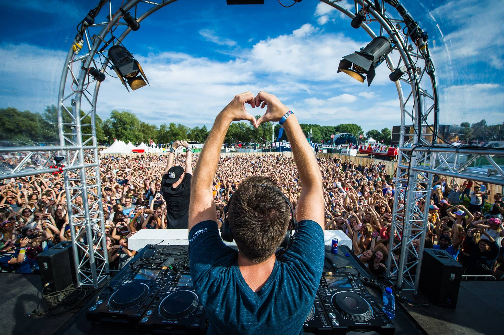

<div class="modaal-content-body">
    <div class="u-max-width-md s-content">
        <h1>
            Barcelona express 2017
        </h1>
        <p>
            Enkele kilometers van Barcelona, verscholen tussen de duinen van de Middellandse Zee liggen een prachtige camping &amp; een verlaten golfterrein die in september omgetoverd worden tot Village du Soleil.
        </p>
        <h2>How to join?</h2>
        <p>
            Om deel te nemen moet je minstens 18 jaar oud zijn. De inschrijvingen gaan open op zaterdag 1 april om 12u voor wie preregistreerde. Wie niet preregistreerde kan inschrijven vanaf zondagmiddag 2 april om 12u.
            Standaard slaapt iedereen 6 nachten in z'n eigen tentje op een perceel op een zelfgekozen adres in The Village. Je mag ook met je eigen slaapbusje of camper komen.
        </p>
        <h2>
            Food?
        </h2>
        <p>
            Er is een volledige Food District in The Village waar je op elk moment van de dag wat lekkers kunt eten tegen een vrij goedkope prijs (maaltijden vanaf 6€) Er zullen een groot aantal Food Trucks zijn die jullie gezond en gevarieerd eten zullen serveren. Daarnaast is er een gigantische supermarkt waar je alle mogelijke ingrediënten kunt kopen tegen supermarktprijzen als je zelf iets wilt klaarmaken.
        </p>
    </div>
</div>
